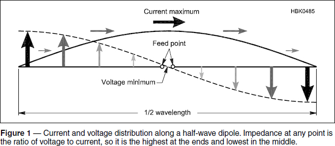
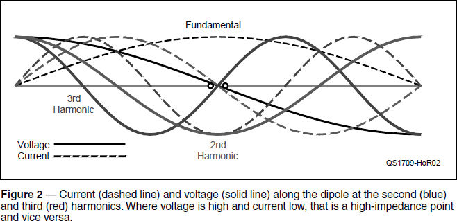
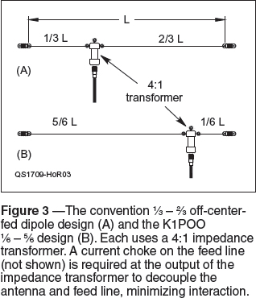

Experiment #176 — Dipole Feed Points
The ordinary half-wavelength dipole is one of the best (and oldest) antennas — hard to beat for good performance, ease of construction, and bang for the builder’s buck.
Dipole Fundamentals
When the dipole is 1⁄2-wavelength long it acts just like a vibrating string at its fundamental frequency. Find a string, stretch it tight between a pair of sturdy supports a foot or two apart, and pluck the string with your finger. Look closely at it from the side. You will see the string’s maximum displacement occurs in the middle, gradually reducing to zero at each end. Imagine that displacement represents electrical current, and you have a mental picture of a dipole at its half-wave resonant frequency. Current flows in one direction (just as the string is displaced in one direction) for half of a cycle, goes to zero, then reverses and builds to a maximum in the other direction for the second half cycle.
Figure 1 shows the dipole’s current and voltage along the antenna. When current is flowing from left to right, voltage on the left side is higher than on the right, and vice versa. This is the root of the dipole’s name; di– (meaning “two”) and –pole (meaning “electrical polarity”). The two “poles” of the dipole (the left and right halves) have opposite electrical polarities so that current is always flowing from one to the other. The polarity reverses with every half cycle, so the direction of current flow also reverses.

The Feed Point
Note that I haven’t mentioned the feed point yet — that’s because it doesn’t affect the basics of how the dipole “works.” Just as you can pluck an instrument string anywhere along its length, you can feed a dipole anywhere as well. Plucking the string in various places may affect how loud it sounds as a result, but it doesn’t change the fundamental frequency. Different points along the string are more effective for making the string sound louder or softer — but still at the same frequency.
For a dipole, the feed point is simply where you attach the feed line. It can be anywhere along the dipole — centered, off-center, or at the end. The feed point is just the place where you “pluck the string” and apply energy to the antenna. The dipole itself doesn’t care. Changing the feed point of a resonant, half-wave dipole doesn’t change the distribution of current and voltage along the dipole or its radiation pattern or its resonant frequency. (This assumes no current can flow back down the feed line as common-mode current.)
Impedance (Z) is the ratio of voltage (V) to current (I), whether at an antenna feed point or in a circuit. If the feed point is at the center, voltage is minimum and current is maximum, so we expect the impedance to be low, as well. And it is — the impedance of a resonant half-wave dipole at the center is approximately 72 Ω in free space.
If you move the feed point away from the center of the dipole, however, the situation changes. Voltage begins to increase and current to decrease, so the farther away from the center of the dipole, the higher impedance gets. If the feed line is attached somewhere off-center, the higher feed point impedance means that the feed line should have a higher characteristic impedance, if energy is to be efficiently transferred to the dipole. Toward the end of the dipole, impedance gets very high, indeed, perhaps a few thousand ohms. This can make it challenging to transfer energy to the dipole near its end. (See Hands-On Radio Experiment #136: “End-Fed Antennas.”1)
That said, the half-wave dipole simply doesn’t care where you attach the feed line. It will have the same voltage and current distribution if excited with the same amount of power no matter where that power source is attached.
Multiband Operation
For single-band, coax-fed operation, there’s no electrical reason to feed the dipole anywhere else but the center; the impedance is a good match to 50 or 75 Ω feed line, and it’s mechanically simple. Moving the feed point away from the center makes the antenna system asymmetrical. This results in the feed line picking up a lot of common-mode current, requiring choke baluns and other techniques to isolate the line. So for a single-band dipole, leave the feed point centered.
For multi-band operation, the situation is quite different. Figure 2 shows the current and voltage distribution along the same dipole on its second (blue) and third (red) harmonic. At the second harmonic, the central feed point impedance is now very high, because voltage is high and current is low. You can see a number of high- and low-impedance points along the dipole for the different frequencies. Feeding the dipole at the center means low feed point impedance on the odd harmonics, beginning with the fundamental and high impedances on the even harmonics. The result is a severe impedance mismatch on at least half the bands. If the feed line is low-loss (such as heavy open-wire line2), that may be acceptable, and an antenna tuner can be used at the transmitter.

Hitting the Spot
More often, though, a high standing-wave ratio (SWR) is not acceptable due to the high losses it causes in coaxial cable. The compromise is to find one spot along the dipole where feed line impedance is similar on different bands. An impedance transformer converts the impedances to a value that does not create a high SWR in coaxial cable. The SWR will not be 1:1, but the feed line loss will be modest and the impedance will be within the range of most tuners.
The most common such design places the feed point at 1⁄3 of the total dipole length from one end and uses a 4:1 impedance transformer. This results in SWR of less than 2:1 on the fundamental, second, and fourth harmonic, e.g. 40, 20, and 10 meters. (The feed point impedance depends on height above ground, as well.) A current choke should be used at the feed point to block common-mode current and decouple the feed line from interacting with the antenna. Several commercial antennas are available in this configuration and the antenna is popularly known as the off-center-fed dipole (OCFD).
Another popular configuration is to feed the antenna with open-wire line and use a tuner to match the feed line impedance to 50 Ω. There will be more feed line loss than matching at the antenna, but the convenience of using a single feed line outweighs the tolerable performance loss.
In 1996, K1POO analyzed the OCFD and came up with an alternative feed point position at approximately 1⁄6 of the length from one end.3 Figure 3 shows a conventional OCFD and the K1POO design.

Children of a Common Mother
What’s particularly important to realize, and the reason for this discussion, is that all three of the antennas we’ve discussed — the half-wave dipole, the end-fed half-wave (EFHW), and the off-center-fed dipole (OCFD) — are the same antenna! The only difference is where the feed line is attached. Assuming they have the same amount of power applied to them, they all have the same radiation pattern and gain. Certainly, you may prefer one design over the other for mechanical or aesthetic convenience. Our oldest antenna friend, the dipole, however, will work just as it always has.
Notes
1All previous Hands-On Radio experiments are available to ARRL members at www.arrl.org/hands-on-radio.
2B. Shackleford, W6YE, “Custom Open-wire Line — It’s a Snap,” QST, July 2011, pp. 33 – 36.
3rsars.files.wordpress.com/2013/01/k1poo-4-band-ocfd-40-20-15-10m-richard-formato-iss-1-3.pdf